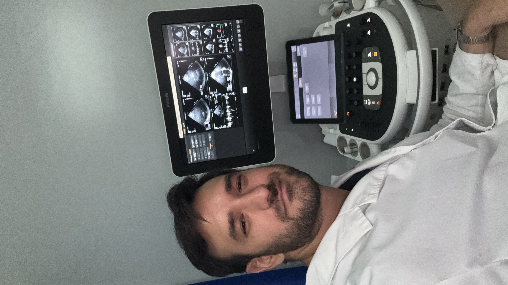

Experiencia clínica y herramientas digitales para un diagnóstico más preciso.
Soy el Dr. Lucas Sebastián Robles, Médico Cardiólogo con una sólida formación clínica y un enfoque orientado a la innovación tecnológica en medicina. Cuento con 6 años de experiencia hospitalaria.
Me formé como residente en Cardiología en el Hospital Español de Buenos Aires, donde también tuve el honor de desempeñarme como Jefe de Residentes. Actualmente, ejerzo como Ecocardiografista y médico de planta en la Unidad Coronaria y Cardiología ambulatoria del mismo hospital, así como en Bioimágenes Lanús y OSECAC.
Mi práctica médica combina la experiencia en el paciente crítico y ambulatorio con el desarrollo de herramientas digitales que optimizan el flujo de trabajo y la precisión diagnóstica del profesional de la salud.

Evaluación cardiovascular integral, prevención primaria y secundaria, manejo de patologías crónicas y seguimiento ambulatorio.
Diagnóstico por imágenes no invasivo. Ecocardiograma Doppler Color, evaluación de función ventricular y valvulopatías.
Estudio de vasos del cuello, miembros inferiores y superiores. Detección temprana de enfermedad aterosclerótica y trombosis.
Manejo del paciente cardiovascular crítico, síndromes coronarios agudos, insuficiencia cardíaca descompensada y arritmias complejas.
Herramienta integral para el cálculo de parámetros hemodinámicos, función diastólica y valvulopatías según guías internacionales.
→ Abrir aplicaciónAsistente para la realización de ecocardiogramas de estrés, protocolos farmacológicos y de ejercicio, con puntajes de motilidad.
→ Abrir aplicaciónAplicación para la evaluación de estenosis carotídea, grosor íntima-media y cuantificación de placa aterosclerótica.
→ Abrir aplicaciónGuía de vistas y mediciones para el Ecocardiograma Transesofágico, protocolos de evaluación valvular y estructural.
→ Abrir aplicaciónSitio en desarrollo — próximamente más herramientas
Ecocardiogramas realizados
Años de experiencia
Herramientas clínicas
Ámbitos de trabajo
Para consultas, derivaciones o intercambio académico, no dude en comunicarse.
Página en desarrollo — consultas profesionales y académicas bienvenidas